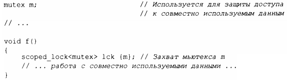

⇐13.1 Введение 13.2.1 unique_ptr и shared_ptr⇒
Одной из ключевых задач любой нетривиальной программы является управление ресурсами. Ресурс - это то, что должно быть захвачено, а позже (явно или неявно) освобождено. Примерами являются память, блокировки, сокеты, дескрипторы потоков выполнения и файловые дескрипторы. Для длительно работающей программы неспособность своевременно освободить ресурс ("утечка") может привести к серьезному снижению производительности и, возможно, даже к аварийному завершению программы. Даже для коротких программ утечка может стать помехой, например из-за нехватки ресурсов, увеличивающей время выполнения на порядки.
Компоненты стандартной библиотеки разработаны так, чтобы не допускать утечки ресурсов. Для этого они полагаются на базовую языковую поддержку управления ресурсами с использованием пар "конструктор/деструктор", чтобы гарантировать, что ресурс не переживет объект, ответственный за него. Примером является использование пары "конструктор/деструктор" в Vector для управления временем жизни его элементов (§4.2.2), и все контейнеры стандартной библиотеки реализованы аналогичным образом. Важно отметить, что этот подход корректно взаимодействует с обработкой ошибок с использованием исключений. Например, этот метод используется для классов блокировки стандартной библиотеки:
Поток thread не будет работать до тех пор, пока конструктор lck не захватит mutex (§ 15.5). Соответствующий деструктор освободит ресурсы. То есть в данном примере деструктор scoped _ lock освободит mutex, когда поток управления покинет f () (с помощью return, путем "попадания в конец функции" или генерации исключения).
Это применение идиомы RAII ("захват ресурса есть инициализация", §4.2.2). RAII имеет фундаментальное значение для идиоматической обработки ресурсов в С++. Контейнеры (такие, как vector и map, string и iostream) управляют своими ресурсами (такими, как дескрипторы файлов и буфера) аналогичным образом.